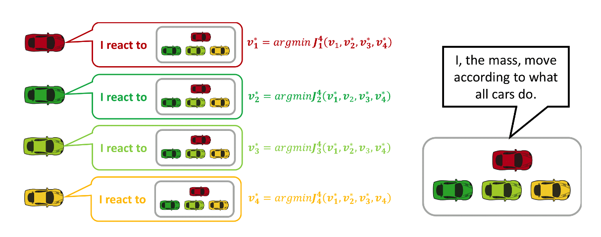

Decentralized LLM collaboration offers great benefits by allowing specialized LLMs to divide and conquer complex problems and operate in parallel to improve efficiency. We develop a cooperative multi-agent reinforcement learning training framework that enables decentralized LLM agents to coordinate effectively, achieving equal or better performance than a single larger LLM [ref1], [ref2].
Mean-Field Game is developed to study the decision-making strategy in multi-agent systems with very large populations by building a connection between stochastic modeling and distributed control. In the context of autonomous vehicle navigation, each vehicle acts as an agent and makes decisions regarding velocity control and route choice [ref] according to current population density distribution. The actions of all vehicles jointly trigger the evolution of density dynamics. This process repeats until it converges to the mean-field equilibrium. We proposed various approaches to address the practical challenges, such as fine granularity [ref], scalability and computational efficiency [ref1, ref2].
